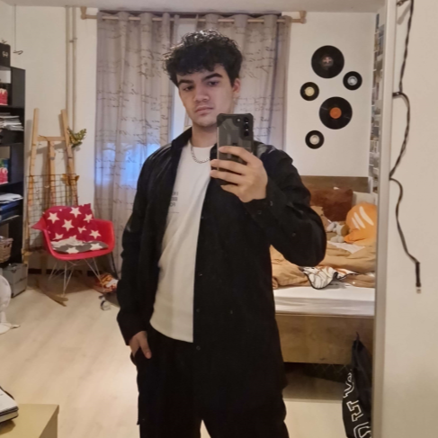

About Me
This is me!
- 
Wie ben ik?
Hoi! Mijn naam is Diego Ramon. Ik ben een tweedejaars student op de HVA (Hoge School van Amsterdam), en dit is mijn portfolio website!
Op de HVA volg ik de opleiding 'Communicatie & Multimedia Design' en heb ook zeker mijn plaats hier gevonden! Tot vandaag heb ik er nog steeds superveel lol en motivatie voor, en ik ben ook zeker van plan hier later mijn beroep van te maken
Voordat ik naar deze school kwam deed ik een andere opleiding genaamd 'Game Development' op het Mediacollege in Amsterdam, maar ik kwam er snel achter dat websites creëren en ontwerpen meer een vak voor mij was. Dit heeft mij niet gestopt van de opleiding afmaken, en heeft mij zelf een flinke voorsprong gegeven op mijn huidige opleiding!
Naast websites maken houd ik ook heel erg veel van sporten, koken en fotograferen, maar ben ik ook veel aanwezig met mijn vriendin!